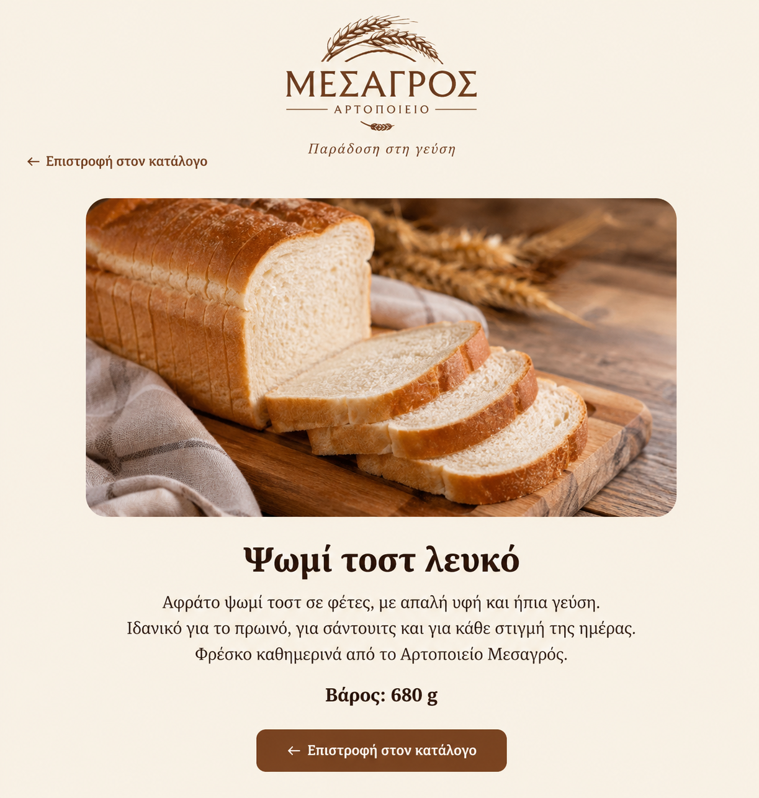

Ψωμί τοστ λευκό
Αφράτο ψωμί τοστ από λευκό αλεύρι, με απαλή υφή και ήπια γεύση.
Ιδανικό για το πρωινό, για σάντουιτς και για κάθε στιγμή της ημέρας.
Φρέσκο καθημερινά από το Αρτοποιείο Μεσαγρός.
Φρέσκο καθημερινά από το Αρτοποιείο Μεσαγρός.
Βάρος: 320 g
← Επιστροφή στον κατάλογο